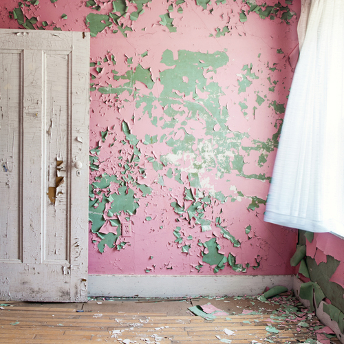
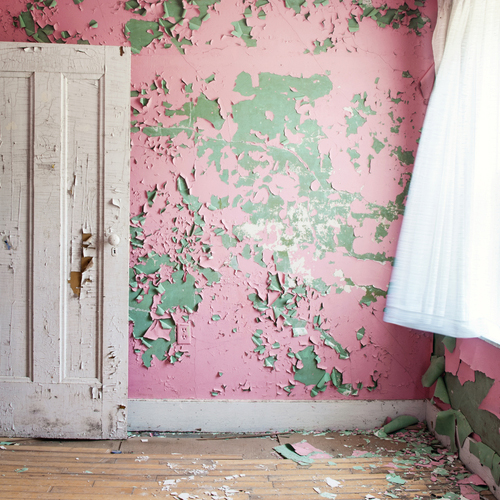
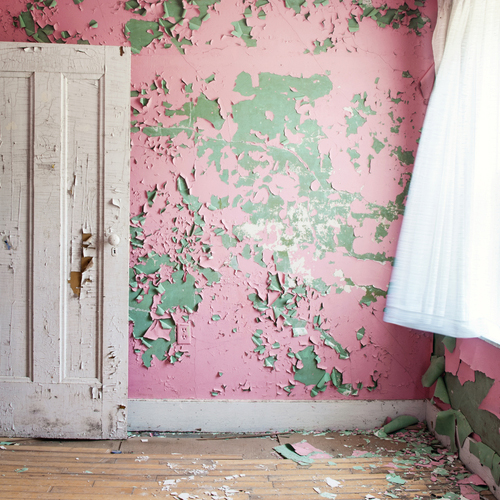
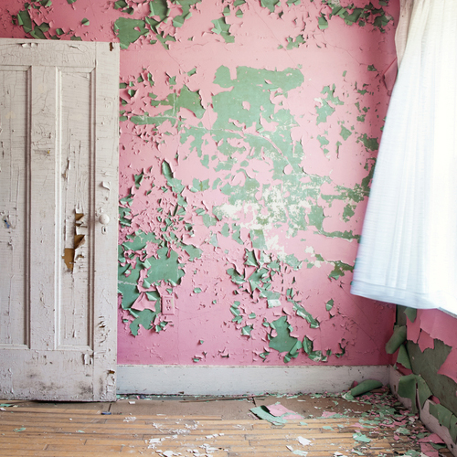

 

Despite a nation wide ban that was enacted 45 years ago, lead-based paint maintains a terrifying, and often silent unequal grip on the modern lives of Americans. Research shows that when children are exposed to lead, their brains can be detrimentally altered forever. According to the Center for Disease Control, there is no safe level of lead for human consumption. In the face such research, the government has failed to provided adequate assistance to fully abate lead paint from the walls of US homes.
For example, in February of 2023, a young boy living in Chicago was hospitalized with extremely high levels of lead. Similarly a young girl in Brooklyn tested off the charts as reported in 2021. These two individual experiences are not sole contributors to a nationwide issue. However, they act as indicators of a problem thought to be eliminated.
Before diving deeper into the data, I pose the question - Could it be that the thought, "lead paint being a problem of the past," places of veil of false confidence over our housing stock?
The goal of this project is to explore how we can use fashion to re-visualize important data.
Using a garment as a tool for data vidsualization, makes it so the exerience of storytelling can occur off screen and across multiple senses. Meaning the audience can both see and feel the data.
The jacket was designed using the inspiration of a 1950's housecoat. Providing an additional artistic nod to a time in US history when lead-based paint was used with blind confidence.
I then primmed, painted, and added a cracking effect the jacket. This achieves three essential effects. The jacket is rough and sturdy,much like a wall in your home, the bright color represents the sweet taste of lead paint, and the cracking effect acheives the very literal represntation of peeling paint.
The irresistably bright and wimsical nature of the garment acts as a representation for how lead paint is an undetectable harm for young children. Who would tell their young child to stay away from such a harmless looking garment?


Now for the metal bearings. The bearings are associated with the standard unit of measurement the medical field uses to measure lead in the body. Micrograms per deciliter of blood.
The jacket in the photo below features the number micrograms found in the blood of the young boy in Chicago this past February.

The weight of the jacket after the bearings were poured in, was nearly 20 pounds.
This literal weight will remain with that young boy for the remainder of his life. Despite medical care and the expulsion of the lead from his body, the longterm cognitive impairement will no doubt remain.
The following section is an additional piece of this project, that helps to contextualize the issue of lead-based paint in New York City.
Residents in New York City can report cracked or peeling paint to the City by calling 311. The 311 complaint will then be directed to the department of housing preservation and development, where they will send out a housing code inspector to assess the situation. The housing inspector will use a special lead reader called an XRF machine. If the reading comes back as greater than 0.25 milligrams per cubic centimeter, and the inspector finds visual evidence of chipping paint, a violation will be issued. This is an oversimplification of the process, but it gives you a basic overview.
Once the violations are issued, they are uploaded into the City's system, Open Data. Open data has violation records for the past 10 years. In order to get a better understanding of where lead paint exists, I compiled the last five years of lead paint related violations. This data is separated by year, and if you click on the buttons below, a map with the proper corresponding data will appear.
The map uses the 2010 Neighborhood Tabulation Areas (NTA) boundaries and lead paint violations issued during inspections by code enforcement inspectors.
If you didn't notice when clicking through the years of the map, the graphic below reveals that there are a few neighborhoods where lead violations are consistently high. It's no consequence that many of these neighborhoods have a lower average income, and have higher populations of Black and Hispanic/Latine folks.
Lead paint hazards remain present in our environment. Concentrations of such harm call for a solution that's equally as targeted and racially aware.
If you see cracked or chipping paint, don't wait to report it to 311. If you find yourself at the voting box, pick those who will support comprehensive housing policy, and support the preservation of our housing stock
Together we can reduce the weight of lead-based paint